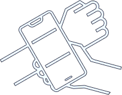

To get measured,
place your phone on your wrist

To get measured,
place your phone on your wrist
cm
Ajuster la réglette virtuelle
sur la largeur dans la continuité du bras
Tournez votre poignet et prenez la mesure
comme sur l'étape précédente
cm
Ajuster la réglette virtuelle
sur la largeur dans la continuité du bras